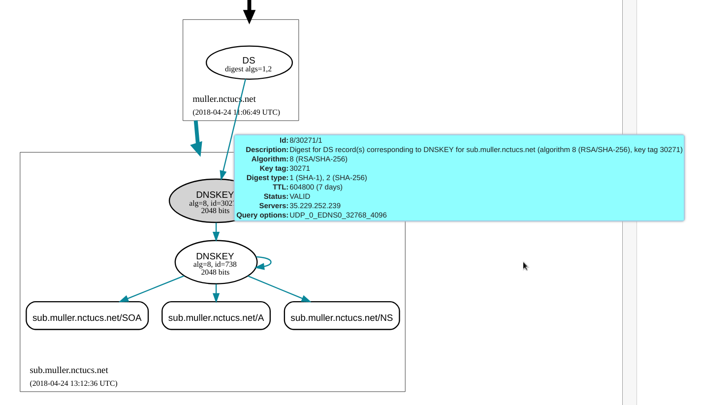

Security
recursion
在 /etc/bind/named.conf.options 裡面加入一行
AXFR 限制
在 /etc/bind/named.conf.options 裡面加入一行
1
| allow-transfer { none; };
|
在 sub.muller.nctucs.net 這個 zone 內加入允許傳輸的 IP：
1
| allow-transfer { 35.229.252.239; 140.113.235.151; 140.113.235.131;};
|
SSHFP
在 terminal 生成 key
1
2
3
4
5
6
7
8
9
| $ ssh-keygen -r sub.muller.nctucs.net.
sub.muller.nctucs.net. IN SSHFP 1 1 80020b2ab8b1162915c5c9ffd3e08be4835e26fb
sub.muller.nctucs.net. IN SSHFP 1 2 8bf38610edef9148d3856072ae77251df241d856bb47f5c0bb4496ed397886dd
sub.muller.nctucs.net. IN SSHFP 2 1 881ada9e0ba72e61f1f1a1ab88a337fd6fb74df5
sub.muller.nctucs.net. IN SSHFP 2 2 cc3805487fdb9e2d8a649b873b6f8ed688c45bdafd13e6d384ec0bc22a3eb7c8
sub.muller.nctucs.net. IN SSHFP 3 1 297ef257d608dc5e4fb34a5cb340c22fcd4b241c
sub.muller.nctucs.net. IN SSHFP 3 2 d19dad726f945a20beddd62c7fd974c6cb43fe39e6ebbd8281f60123c3e64dbd
sub.muller.nctucs.net. IN SSHFP 4 1 1993c256a5281b536e859cabd97c052ac30e407e
sub.muller.nctucs.net. IN SSHFP 4 2 ee0d8e0bbc3f768c710a12ad949eb1ea03d0415d1c498180fe211452da24c223
|
然後把這些 records 丟到各個 view 內的 zone file 裡面
DNSSEC
生成 DNS Key
先生成 KSK(Key Signing Key) 和 ZSK(Zone Signing Key)，我生成在 /var/cache/bind/key/ 下面，方便管理
KSK：(/var/cache/bind/key/ksk/)
1
2
| $ dnssec-keygen -r /dev/urandom -a RSASHA256 -b 2048 -f KSK -n zone sub.muller.nctucs.net
Ksub.muller.nctucs.net.+008+30271
|
- Ksub.muller.nctucs.net.+008+30271.key
- Ksub.muller.nctucs.net.+008+30271.private
ZSK：(/var/cache/bind/key/zsk/)
1
2
| $ dnssec-keygen -r /dev/urandom -a RSASHA256 -b 2048 -n zone sub.muller.nctucs.net
Ksub.muller.nctucs.net.+008+00738
|
- Ksub.muller.nctucs.net.+008+00738.key
- Ksub.muller.nctucs.net.+008+00738.private
Include Key
為了備份一下還沒有加入 DNSSEC 的 zone file，所以我複製原本的 zone file 並在每個檔案後加入 .dnssec 區別
之後在改過名的 zone file 中 include 剛剛生成好的 key
1
2
| $INCLUDE /var/cache/bind/key/ksk/Ksub.muller.nctucs.net.+008+30271.key KSK
$INCLUDE /var/cache/bind/key/zsk/Ksub.muller.nctucs.net.+008+00738.key ZSK
|
記得 KSK 和 ZSK 的位置要打對
簽署 Zone file
1
| $ sudo dnssec-signzone -o sub.muller.nctucs.net -g -t -k /var/cache/bind/key/ksk/Ksub.muller.nctucs.net.+008+30271 db.sub.muller.nctucs.net.dnssec /var/cache/bind/key/zsk/Ksub.muller.nctucs.net.+008+00738
|
-k 後面接上 KSK，ZSK 則不用
可以寫一個 SHELL script，方便以後更新 DNS Server 時重新簽署，如下：
1
2
3
4
5
6
7
| #!/bin/bash
sudo dnssec-signzone -o sub.muller.nctucs.net -g -t -k /var/cache/bind/key/ksk/Ksub.muller.nctucs.net.+008+30271 db.sub.muller.nctucs.net.dnssec /var/cache/bind/key/zsk/Ksub.muller.nctucs.net.+008+00738
sudo dnssec-signzone -o sub.muller.nctucs.net -g -t -k /var/cache/bind/key/ksk/Ksub.muller.nctucs.net.+008+30271 db.sub.muller.nctucs.net.internal-bsd.dnssec /var/cache/bind/key/zsk/Ksub.muller.nctucs.net.+008+00738
sudo dnssec-signzone -o sub.muller.nctucs.net -g -t -k /var/cache/bind/key/ksk/Ksub.muller.nctucs.net.+008+30271 db.sub.muller.nctucs.net.internal-linux.dnssec /var/cache/bind/key/zsk/Ksub.muller.nctucs.net.+008+00738
rndc reload
|
更新 Zone file
簽署完域名後會發現資料夾多了幾個檔案：
- db.sub.muller.nctucs.net.dnssec.signed
- db.sub.muller.nctucs.net.internal-bsd.dnssec.signed
- db.sub.muller.nctucs.net.internal-linux.dnssec.signed
這些就是簽署完後的 Zone file，我們要回去 named.conf.local 改變 file 來指到到這些簽署完的檔案：
1
2
3
4
5
6
| zone "sub.muller.nctucs.net" IN {
type master;
file "zone/db.sub.muller.nctucs.net.dnssec.signed";
allow-transfer { 35.229.252.239; 140.113.235.151; 140.113.235.131;};
notify yes;
};
|
開啟 DNSSEC
在 named.conf.options 加入下面幾行設置
1
2
3
| dnssec-enable yes;
dnssec-validation yes;
dnssec-lookaside auto;
|
建立信任鏈
因為你的 public key 已經被上層紀錄了，所以當解析器查詢 abc.com.tw 的時候，會透過 com.tw 去查詢 abc.com.tw 的 DS 紀錄，並跟 abc.com.tw 取得 DNSKEY 做 hash, 兩個一比對就知道了。
詳細可參考：DNSSEC 入門介紹
剛剛我們簽署域名的時候加了一個參數 -g，這個參數會生成簽署的 Zone 的 DS record 檔案，我的叫做 dsset-sub.muller.nctucs.net.
把檔案的內容丟到上層域名，也就是 muller.nctucs.net，如此就可以建立信任鏈了
1
2
| sub.muller.nctucs.net. IN DS 30271 8 1 C4992664A311C5042D345D59963637CCF936993A
sub.muller.nctucs.net. IN DS 30271 8 2 EF3872D4D16B1E5DF6624B8ABF60A7279C08C09B5CD3E6D0A18F2689 99A54C80
|
如果簽署域名的時候沒有加 -g 這個參數，也能用
1
| $ dnssec-signzone -g ...
|
這行指令生成 DS record
測試
SSHFP
1
2
3
| $ ssh sub.muller.nctucs.net -o VerifyHostKeyDNS=yes
ECDSA key fingerprint is SHA256:0Z2tcm+UWiC+3dYsf9l0xstD/jnm672CgfYBI8PmTb0.
Matching host key fingerprint found in DNS.
|
有 Matching 代表設定成功了
DNSviz

檢查信任鏈，如果狀態是 Security 且沒有 error，代表設定成功了 (可能需要花一段時間才會更新)
問題與解決方案
DNSSEC 一直設定不成功
檢查一下幾個問題：
- 有沒有為簽署的域名加一個 A record
- 我有被這個問題雷到，就是沒有為當前的 zone 設 A record："@ IN A 35.229.184.206"，設完之後就好了
- Key 有沒有對好
- Zone file 的序號有沒有增加
- 好像也被這個雷很多次，總之有改 slave 的東西就加一下序號吧
- 還在慢慢更新，睡一覺起床就好了
總結
作業的需求都完成了，整理一下我們檔案的架構：
1
2
3
4
5
6
7
8
9
10
11
12
13
14
15
16
17
18
19
20
21
22
23
24
25
26
27
28
29
30
| /
└───var/cache/bind/
│ │
│ └───zone
│ │ │ db.kaiiiz.nctucs.net
│ │ │ db.35.229.184
│ │ │ db.sub.muller.nctucs.net.dnssec.signed
│ │ │ db.sub.muller.nctucs.net.internal-linux.dnssec.signed
│ │ │ db.sub.muller.nctucs.net.internal-bsd.dnssec.signed
│ │
│ └───slaves
│ │ │ db.sub.kaiiiz.nctucs.net
│ │ │ db.sub.kaiiiz.nctucs.net.linux
│ │ │ db.sub.kaiiiz.nctucs.net.bsd
│ │
│ └───key
│ └───KSK
│ │ │ Ksub.muller.nctucs.net.+008+30271.key
│ │ │ Ksub.muller.nctucs.net.+008+30271.private
│ │
│ └───ZSK
│ │ Ksub.muller.nctucs.net.+008+00738.key
│ │ Ksub.muller.nctucs.net.+008+00738.private
│
└───etc/bind/
│ named.conf
│ named.conf.local
│ named.conf.logging
│ named.conf.options
│ named.conf.default-zones
|